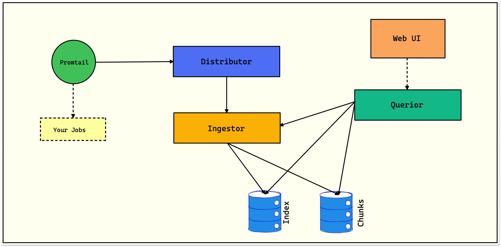

The architecture of Loki

A brief overview of components in Loki architecture:
-
Promtail - It is the log collection agent that runs on each node of a Kubernetes cluster.
-
Distributor - The first component to receive logs from promtail.
-
Ingestor - It builds compressed chunks of log data and flushes them out as chunks.
-
Querior - It handles the read path, scanning the index to figure out which chunks match
Download and Install Loki localy
o keep this as simple as possible, we will install the Loki binary as a service on our existing Grafana server.
To check the latest version of Grafana Loki, visit the Loki releases page. https://github.com/grafana/loki/releases/
cd /usr/local/bin
curl -O -L "https://github.com/grafana/loki/releases/download/v2.9.3/loki-linux-amd64.zip"
unzip "loki-linux-amd64.zip"
And allow execute permission on the Loki binary
chmod a+x "loki-linux-amd64"
mv loki-linux-amd64 loki
Download or create the Loki config
wget https://raw.githubusercontent.com/grafana/loki/main/cmd/loki/loki-local-config.yaml
And add this text.
auth_enabled: false
server:
http_listen_port: 3100
grpc_listen_port: 9096
common:
instance_addr: 127.0.0.1
path_prefix: /tmp/loki
storage:
filesystem:
chunks_directory: /tmp/loki/chunks
rules_directory: /tmp/loki/rules
replication_factor: 1
ring:
kvstore:
store: inmemory
query_range:
results_cache:
cache:
embedded_cache:
enabled: true
max_size_mb: 100
schema_config:
configs:
- from: 2020-10-24
store: tsdb
object_store: filesystem
schema: v12
index:
prefix: index_
period: 24h
ruler:
alertmanager_url: http://localhost:9093
# By default, Loki will send anonymous, but uniquely-identifiable usage and configuration
# analytics to Grafana Labs. These statistics are sent to https://stats.grafana.org/
#
# Statistics help us better understand how Loki is used, and they show us performance
# levels for most users. This helps us prioritize features and documentation.
# For more information on what's sent, look at
# https://github.com/grafana/loki/blob/main/pkg/analytics/stats.go
# Refer to the buildReport method to see what goes into a report.
#
# If you would like to disable reporting, uncomment the following lines:
#analytics:
# reporting_enabled: false
ruler: alertmanager_url: http://localhost:9093 This default configuration was copied from https://raw.githubusercontent.com/grafana/loki/master/cmd/loki/loki-local-config.yaml. There may be changes to this config depending on any future updates to Loki.
Configure Loki to run as a service Now we will configure Loki to run as a service so that it stays running in the background.
Create a user specifically for the Loki service
sudo useradd --system loki
Create a file called loki.service
sudo nano /etc/systemd/system/loki.service
Add the script and save
[Unit]
Description=Loki service
After=network.target
[Service]
Type=simple
User=loki
ExecStart=/usr/local/bin/loki -config.file /usr/local/bin/config-loki.yaml
[Install]
WantedBy=multi-user.target
Now start and check the service is running.
sudo service loki start
sudo service loki status
We can now leave the new Loki service running.
If you ever need to stop the new Loki service, then type
sudo service loki stop
sudo service loki status
Warning: If you reboot your server, the Loki Service may not restart automatically. You can set the Loki service to auto restart after reboot by entering,
sudo systemctl enable loki.service
Run
./loki --config.file=config-loki.yaml
Install from docker-compose with traefik
docker-compose.yml
version: "3.9"
services:
grafana:
image: grafana/grafana:latest
container_name: grafana
restart: always
labels:
- "traefik.enable=true"
- "traefik.http.routers.logs.entrypoints=https"
- "traefik.http.routers.logs.rule=Host(`logs.${HOST}`)"
- "traefik.http.routers.logs.tls=true"
- "traefik.http.routers.logs.tls.certresolver=letsEncrypt"
- "traefik.http.services.logs-service.loadbalancer.server.port=3000"
- "traefik.docker.network=webproxy"
environment:
- GF_PATHS_DATA=/var/lib/grafana/data
- GF_PATHS_LOGS=/var/log/grafana
- GF_PATHS_PLUGINS=/var/lib/grafana/plugins
- GF_PATHS_PROVISIONING=/etc/grafana/provisioning
- GF_AUTH_ANONYMOUS_ENABLED=false
- GF_USERS_ALLOW_SIGN_UP=false
- GF_USERS_ALLOW_ORG_CREATE=false
volumes:
- ./data/grafana/grafana.ini:/etc/grafana/grafana.ini
- ./data/grafana/ldap.toml:/etc/grafana/ldap.toml
- ./data/grafana/datasources.yaml:/etc/grafana/provisioning/datasources/datasources.yaml
- ./data/grafana/backup:/backup
- grafana-storage:/var/lib/grafana
expose:
- 3000
networks:
- loki
- webproxy
loki:
image: grafana/loki:2.6.1
container_name: loki
restart: always
labels:
- "traefik.enable=true"
- "traefik.http.routers.loki.entrypoints=https"
- "traefik.http.routers.loki.rule=Host(`loki.${HOST}`)"
- "traefik.http.routers.loki.tls=true"
- "traefik.http.routers.loki.tls.certresolver=letsEncrypt"
- "traefik.http.routers.loki.middlewares=loki-auth"
- "traefik.http.services.loki-service.loadbalancer.server.port=3100"
- "traefik.http.middlewares.loki-auth.basicauth.users=loki:$$2y$$05$$UZwmFTrItdJngPd3eLTn5uw5SKU4fyB0d22aWA0sG1A/Cx9PONtM6" # loki\loki123
- "traefik.docker.network=webproxy"
command: -config.file=/etc/loki/local-config.yaml
volumes:
- loki_storage:/loki
- ./data/local-config.yaml:/etc/loki/local-config.yaml
expose:
- 3100
networks:
- loki
- webproxy
networks:
loki:
name: loki
webproxy:
name: webproxy
volumes:
grafana-storage:
loki_storage:
.env file
HOST=pdan.dev
data/local-config.yaml
auth_enabled: false
server:
grpc_listen_port: 9095
http_listen_port: 3100
compactor:
retention_delete_delay: 2h
retention_delete_worker_count: 150
retention_enabled: true
shared_store: filesystem
working_directory: /loki/boltdb-shipper-compactor
ingester:
chunk_block_size: 262144
chunk_idle_period: 3m
chunk_retain_period: 1m
lifecycler:
ring:
kvstore:
store: inmemory
replication_factor: 1
max_transfer_retries: 0
wal:
dir: /loki/wal
limits_config:
enforce_metric_name: false
max_entries_limit_per_query: 5000
per_stream_rate_limit: 8M
per_stream_rate_limit_burst: 16M
reject_old_samples: true
reject_old_samples_max_age: 360h
schema_config:
configs:
- from: 2020-10-24
store: boltdb-shipper
object_store: filesystem
schema: v11
index:
prefix: index_
period: 24h
common:
path_prefix: /loki
storage:
filesystem:
chunks_directory: /loki/chunks
rules_directory: /loki/rules
replication_factor: 1
ring:
instance_addr: 127.0.0.1
kvstore:
store: inmemory
chunk_store_config:
max_look_back_period: 0s
table_manager:
retention_deletes_enabled: true
retention_period: 360h
data/grafana/ldap.toml
verbose_logging = true
[[servers]]
host = "ipa.bildme.ru"
port = 636
use_ssl = true
start_tls = false
ssl_skip_verify = true
bind_dn = "uid=system,cn=sysaccounts,cn=etc,dc=ipa,dc=bildme,dc=ru"
bind_password = "PASSWORD"
search_filter = "(uid=%s)"
search_base_dns = ["cn=users,cn=accounts,dc=ipa,dc=bildme,dc=ru"]
group_search_base_dns = ["cn=admins,cn=groups,cn=accounts,dc=ipa,dc=bildme,dc=ru"]
[servers.attributes]
name = "givenName"
surname = "sn"
username = "uid"
member_of = "memberOf"
email = "mail"
# Administrators
[[servers.group_mappings]]
grafana_admin = true
group_dn = "cn=admins,cn=groups,cn=accounts,dc=ipa,dc=bildme,dc=ru"
org_role = "Admin"
data/grafana/grafana.ini
[analytics]
check_for_updates = true
[auth.ldap]
allow_sign_up = true
config_file = /etc/grafana/ldap.toml
enabled = false
[grafana_net]
url = https://logs.bildme.ru
[log]
mode = console
[paths]
data = /var/lib/grafana/data
logs = /var/log/grafana
plugins = /var/lib/grafana/plugins
provisioning = /etc/grafana/provisioning
[server]
root_url = https://logs.bildme.ru
[smtp]
enabled = true
from_address = logs@bildme.ru
from_name = Logs Bildme.ru
host = smtp.eu.mailgun.org:587
password = PASSWORD
skip_verify = true
user = logs@bildme.ru
data/grafana/datasource.yaml
apiVersion: 1
datasources:
- access: proxy
isDefault: true
name: loki-main
type: loki
url: http://loki:3100
data/grafana/.env
GRAFANA_TOKEN=
GRAFANA_ADMIN_ACCOUNT=admin
GRAFANA_ADMIN_PASSWORD=admin
VERIFY_SSL=false
GRAFANA_URL=http://grafana:3000
AWS_S3_BUCKET_NAME=grafana
AWS_S3_BUCKET_KEY=grafana-backup
AWS_DEFAULT_REGION=ru-nsk
AWS_ACCESS_KEY_ID=grafana-user
AWS_SECRET_ACCESS_KEY=grafana-user
AWS_ENDPOINT_URL=https://s3.domain.com
RESTORE=false
ARCHIVE_FILE=
Test Loki Connected to Grafana
Go to grafana logs.pdan.dev Configuration > Data Sources > (double-click)loki-main > Test
[x] Data source connected and labels found
tweaks
Grafana:
- Backup
docker run --rm --volumes-from grafana -v $(pwd)/data/grafana/backup:/backup alpine tar cfv /backup/grafana-backup.tgz /var/lib/grafana
- Restore
docker run --rm --volumes-from grafana -v $(pwd)/data/grafana/backup:/backup ubuntu bash -c "cd /var/lib/grafana && tar xvf /backup/grafana-backup.tgz --overwrite --strip-components 1"
Promtail from source
curl -O -L "https://github.com/grafana/loki/releases/download/v2.9.3/promtail-linux-amd64.zip"
unzip "loki-linux-amd64.zip"
chmod a+x "promtail-linux-amd64"
mv "promtail-linux-amd64" promtail
wget https://raw.githubusercontent.com/grafana/loki/main/clients/cmd/promtail/promtail-local-config.yaml
server:
http_listen_port: 9080
grpc_listen_port: 0
positions:
filename: /tmp/positions.yaml
clients:
- url: http://localhost:3100/loki/api/v1/push
scrape_configs:
- job_name: system
static_configs:
- targets:
- localhost
labels:
job: varlogs
__path__: /var/log/*log
Configure Promtail to run as a service Now we will configure Promtail to run as a service so that it stays running in the background.
Create a user specifically for the Promtail service
sudo useradd --system promtail
Create a file called promtail.service
sudo nano /etc/systemd/system/promtail.service
Add the script and save
[Unit]
Description=Promtail service
After=network.target
[Service]
Type=simple
User=promtail
ExecStart=/usr/local/bin/promtail -config.file /usr/local/bin/promtail-local-config.yaml
[Install]
WantedBy=multi-user.target
Now start and check the service is running.
sudo service promtail start
sudo service promtail status
If you ever need to stop the new Promtail service, then type
sudo service promtail stop
sudo service promtail status
Warning: If you reboot your server, the Promtail Service may not restart automatically. You can set the Promtail service to auto restart after reboot by entering,
sudo systemctl enable promtail.service
Run Promtail (promtail on localhost:9080)
./promtail --config.file=promtail-local-config.yaml